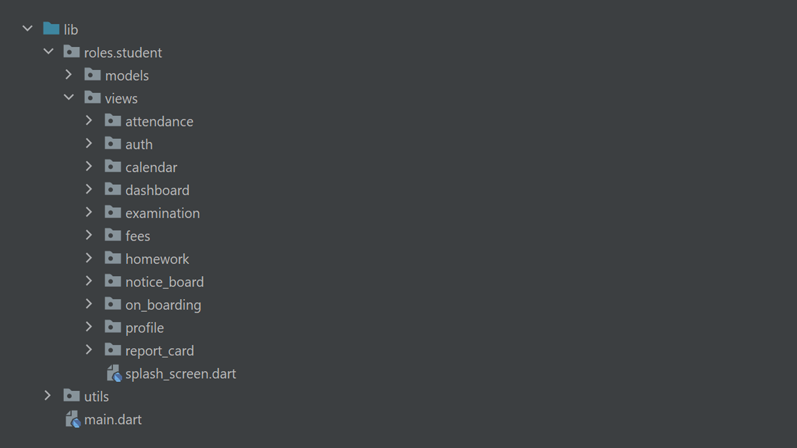
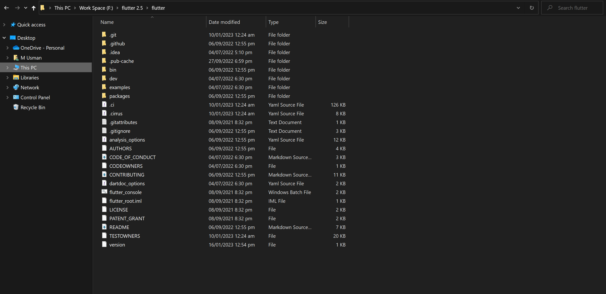
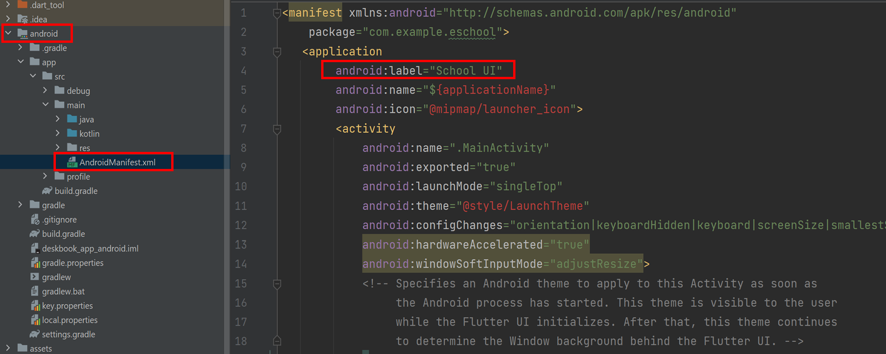

Created: 16/1/2023
By: DevsBeta
Email: hmusman@devsbeta.com
First of all, Thank you so much for purchasing this application and for being our loyal customer. This documentation is to help you regarding set up.
This project have required following dependency
Flutter Requirements
General file structure of the app
Extract the zip file and copy flutter folder into your desired installation location for the Flutter SDK (eg. C:\src\flutter; do not install Flutter in a directory like C:\Program Files\).
Extract downloaded file, just double click on that. and just copy extracted folder and paste it to your desired location (for example, Documents\flutter).
Path variable needs to be updated to access “flutter” command from terminal. you can just update path variable for current terminal window only. and if you want to access flutter commands from anywhere in terminal, we need to update SDK path permanently.
To update PATH variable, we need to open terminal.
To update PATH variable for current terminal window only, then enter this command "export PATH="$PATH:`pwd`/flutter/bin"" and hit enter key.
To update PATH variable permanently, then Open or create .bash_profile file. to open or create that file, then enter "sudo open -e $HOME/.bash_profile" and hit enter key.
Append below line to bash_profile file at bottom of all other content. "export PATH="$PATH:[PATH_TO_FLUTTER_GIT_DIRECTORY]/flutter/bin"" as [PATH_TO_FLUTTER_GIT_DIRECTORY] is actual path of SDK folder.
Run this command on terminal "source $HOME/.bash_profile" to refresh PATH variables.
Then check whether our SDK is successfully installed or not.
You are now ready to run Flutter commands in the Flutter Console!
Run "flutter doctor" into terminal, If you are getting check list of flutter sdk requirements, it means SDK is successfully installed on your machine. and you can start building flutter apps on your machine.
If you find any issue during environment setup in macos, please go online - Click here
Change App Name
Change App Icon
Change Package Name